first transmission active.
stay tuned for further deployment orders.

first transmission active.
stay tuned for further deployment orders.
The apocalypse is expanding. Enter your coordinates to receive early warnings for new music, drops, and future live operations.